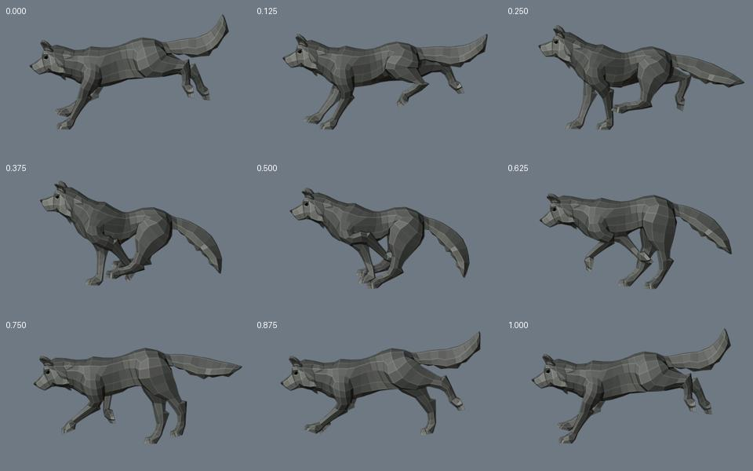
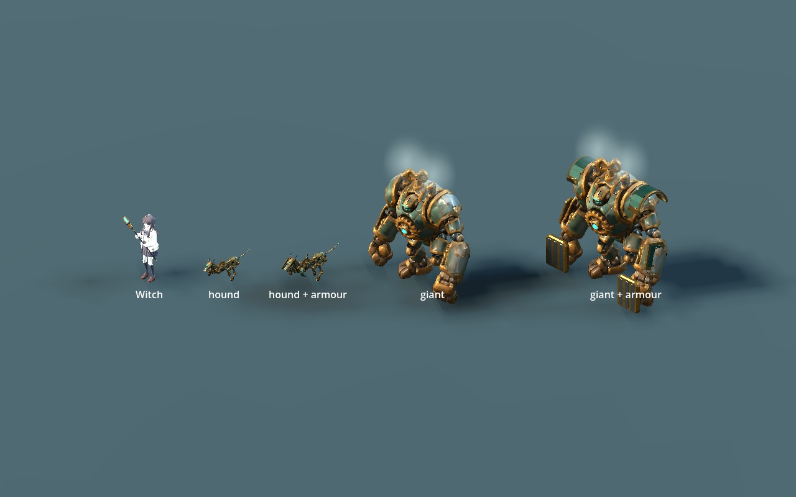

WITCH · AUTOMATION MOTION · 2026.11.05
거대 인형의 회전축을 맞추고
수렵견에 늑대 질주를 옮겼습니다
화면 왼쪽: 수정본오른쪽: 이전 버전CC0 애니메이션같은 조명·크기로 비교합니다. 느린 재생으로 회전 중심과 발 회수 동작을 확인할 수 있습니다.
거대 자동인형
톱니의 타원 변형을 줄이고 기울어진 실제 중심축으로 돌립니다. 태엽도 목 방향을 따르며 동력 렌즈가 새 허브에 맞춰집니다.
가슴 톱니 축 약 17.78° · 태엽 축 약 10.99° 보정. 모션 중 중심 오차 0.001mm 미만. 원형의 작은 표면 비대칭은 유지합니다.
거대 인형 편집 원본·게임용 파일
기계 수렵견
Quaternius의 실제 늑대 Gallop 동작에서 발 궤적·몸통·머리·꼬리·뒷발목을 가져왔습니다. 기계 다리의 길이를 유지하면서 앞발 회수와 뒷발 접힘을 맞췄습니다.
6.5m/s 속도에 맞춰 0.5초에 질주 두 번. 클립 전체 이동 기준 3.25m는 유지합니다. 관절별 스케일 변형 없이 접지 중 미끄러짐은 최대 약 2.92mm입니다.
가져온 늑대 원본 동작
Wolf.blend의 Gallop, 0–17프레임 / 30fps. 원본 IK를 평가한 뒤 관절 비율과 접지를 보정했습니다. 아래는 변환 전 원본입니다.

장갑형에도 같은 동작 적용
중장 추적기
기존 장갑 외형에 새 질주를 연결했습니다.
거대 단일 강화
현재 기본형과 본·클립을 맞춘 장갑 v2입니다.
실제 1.75배 게임 카메라

이 크기로 움직임 보기
메시·보존·검증
삼각형 수와 UV·면 연결·웨이트·재질을 유지합니다. 거대 인형은 톱니·렌즈, 수렵견은 피스톤 정적 길이만 고쳤습니다. 이전 파일은 별도로 보존합니다.
| 자산 | 삼각형 | 강체 / 본 |
|---|
| 수렵견 v3 | 6,795 | 33 / 37 |
| 거대 인형 v2 | 15,943 | 27 / 33 |
| 추가 장갑 | +1,388 / +1,256 | 기본형과 같은 본 |
원본과 새 GLB 임포트 QA 오류 0. 지정 클립의 바닥·접지·관절·축·피스톤과 Godot 재생을 확인했습니다. 뒤 오른쪽 피스톤의 최소 삽입 여유는 약 0.40mm입니다. 이음 정점, 숨은 접합면과 내부 베어링 경고를 유지합니다.
축·접지·보존 수치 · 현재 파일과 검증 기록